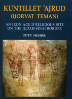

Ze'ev meshel
Kuntillet 'Ajrud (Horvat Teman). An Iron Age II Religious Site on the Judah-Sinai Border
Israel Exploration Society, Jerusalem 2012
|  | This final report sums up the excavations at the unique desert site of Kuntillet 'Ajrud (Arabic: 'the solitary hill of the water'). The site has no biblical identification. Its Hebrew name, Horvat Teman, was assigned by the excavators due to the appearance of this biblical name (meaning 'the far south') in some of the inscriptions discovered at the site. The site of Kuntillet 'Ajrud is located in eastern Sinai, in an arid desert region empty of permanent settlements, whose only inhabitants are desert nomads. The site is situated on a prominent hill near a meagre but perennial water sources, near the Darb Ghazza - the ancient road to Elat and southern Sinai. It was a short-lived, single-stratum, one-period site dated by typology and paleography, and confirmed by radiocarbon dating and historical probability, to the beginning of Iron Age IIB (first half of the 8th century BCE). |
| Back to Publications | Title Page |
Table of Contents |
{kind=link}